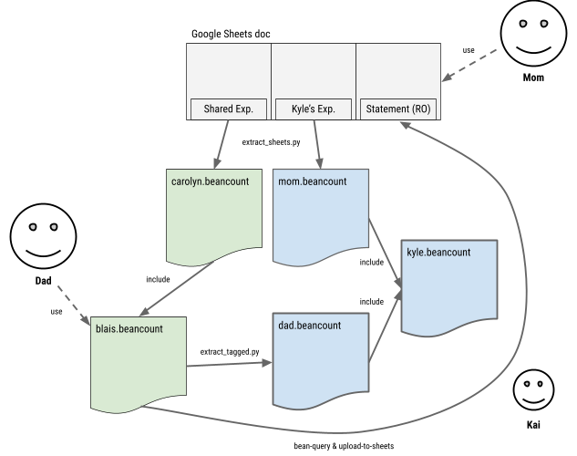

非官方中文译文 · 术语保留英文；代码、account、option、币种原样。 原文：https://beancount.github.io/docs/how_we_share_expenses/
我们如何分摊费用
本文档介绍了我如何与妻子分摊费用。这个过程有些复杂，我已经建立了一套行之有效的系统，但对于大多数人来说，要完全照搬并不简单，因此我决定花时间详细描述一下，以帮助大家为自己设计类似的流程。
背景
我们两人都是职场人士，并决定将所有费用大致按 70%/30% 的比例分担。这是我们追求的目标，并非硬性规定，但我们像对待刚性规则一样进行追踪，并将其视为一个良好的近似值。我们有两种类型的共同费用：
-
Shared（共同费用）。 我们之间的共同支出，例如房租、与朋友外出就餐等。
-
Kyle（Kyle 的费用）。 我们孩子的费用，例如托儿所、尿布、保姆、婴儿食品。
这些费用的处理方式截然不同，因为我们像对待一个独立项目一样记录孩子的费用。（如果你更喜欢图表，本文档末尾有一张图，提供了该系统的概览。）
共同支出
对于我们的共同支出，我在个人账本文件中为她维护了一个 account。这种方式很简单，我也没有太大兴趣去维护一个涵盖我们所有共同支出的独立账本。对我来说，只需跟踪该 account 中她的 balance 就足够了。你可以把这个 account 想象成一张信用卡（我是 credit provider），她通过转账以及自己承担共同支出来偿还它。
我只需在个人账本（blais.beancount）中声明一个 Assets:US:Share:Carolyn account。
我的共同支出
每当我产生一笔属于我们两人的支出时，我会正常进行 booking，但会为其添加 #carolyn 标签：
2018-12-23 * "WHISK" "Water refill" #carolyn
Liabilities:US:Amex:BlueCash -32.66 USD
Expenses:Food:Grocery
这会自动转换为：
2018-12-23 * "WHISK" "Water refill" #carolyn
Liabilities:US:Amex:BlueCash -32.66 USD
Expenses:Food:Grocery 19.60 USD
Assets:US:Share:Carolyn 13.06 USD
share: TRUE
这是由我构建的一个自定义插件完成的，它根据我们之间约定的一些规则来拆分支出（另请参阅Akkukis 的这个插件）。在这个例子中，32.66 的 40%（即 13.06）被重新路由到她的账户。请注意，对我来说这是一个 asset account，因为她欠这笔钱。
她的共享支出
我们还需要记录她为共享支出自行支付的费用。由于她不是 Beancount 用户，我设置了一个 Google Sheets 文档，她可以在其中向特定工作表添加行。该工作表包含以下字段：Date（日期）、Description（描述）、Account（账户）、Amount（金额）。我尽量保持其简洁。
然后，我编写了一个 extract_sheets.py 脚本，可以自动拉取这些数据，并将其写入一个专用文件中，每次都会覆盖整个文件内容。该账本（carolyn.beancount）的内容如下所示：
pushtag #carolyn
...
2017-05-21 * "Amazon" "Cotton Mattress Protector in White"
Expenses:Home:Furniture 199.99 USD
Assets:US:Share:Carolyn -199.99 USD
...
poptag #carolyn
所有这些 transaction 都通过 pushtag/poptag directive 标记为 #carolyn。插件会将它们转换，以减少我应支付的那部分金额：
2017-05-21 * "Amazon" "Cotton Mattress Protector in White" #carolyn
Expenses:Home:Furniture 119.99 USD
Assets:US:Share:Carolyn -119.99 USD
share: TRUE
这些 posting 通常会相应减少她的资产账户，从而消除她替我支付的那部分共享支出。
我通过一条命令生成该文件，如下所示：
extract_sheets.py --tag='carolyn' --sheet='Shared Expenses' '<id>' 'Assets:US:Share:Carolyn' > carolyn.beancount
在我的个人账本中，我包含此文件，以将这些支出与我自己的 directive 流合并。我还定义了一个查询，用于生成她账户的报表。在 blais.beancount 中：
include "carolyn.beancount"
2020-01-01 query "carolyn" "
select date, description, position, balance
from open on 2017-01-01
where account ~ 'Assets:US:Share:Carolyn'
"
核对与对账单
为了生成一份供她审阅的 statement（以便发现数据录入中偶尔出现的错误），我只需将该 account 的 journal 导出为 CSV 文件，并上传到她在其中录入费用的同一个 Google Sheets 文档中的另一个 sheet：
bean-query -f csv -o carolyn.csv --numberify $L run carolyn
upload-to-sheets -v --docid="<id>" carolyn.csv:"Shared Account (Read-Only)"
这让她可以轻松地目视检查所有 posting 到她与我之间 balance 的金额，并在出现错误时指出（总会有一些错误出现）。此外，所有信息都集中在一个地方——保持简单很重要。最后，我们可以利用 Sheets 的协作功能进行沟通，例如评论、高亮文本等。
请注意，此系统的好处在于能够正确地应计我的费用，通过减少我支付的项目类别中我的份额，并包含她支付的项目类别中她的份额。
对账我们的共享费用
最后，为了对账这个账户，我的妻子（或者我，但通常是她负责）只需向我的账户进行一笔银行转账，我将此笔转账记录为减少她的 running account 余额：
2019-01-30 * "HERBANK EXT TRNSFR; DIRECTDEP"
Assets:US:MyBank:Checking 3000 USD
Assets:US:Share:Carolyn
通常她每两到三个月会这样做一次。她会在笔记本电脑上操作，然后随口问一句：“嘿，我现在能转多少余额？” 由于系统精确地跟踪着所有细节，所以不必担心具体数额，她可以发送一个大概的金额，这没关系，它会记录到她的账户中。
子女费用
我设计了一套截然不同的系统来追踪我们孩子的费用。对于 Kyle，我绝对有兴趣追踪与他相关的所有 cash flow 和 expenses，无论是由谁支付的。能够向（我们的 ledger）提出诸如“他的教育费用是多少？”或“我们总共在尿布上花了多少钱？”这样的问题，是一件很有趣的事。此外，我们倾向于为 Kyle 支付不同的项目，例如，我负责处理托儿所的费用（毕竟我是那个会计极客，所以这并不令人惊讶），而他的母亲则倾向于购买所有衣物并准备他的食物。为了全面了解与他相关的所有成本，我们需要正确地记录这些事情。
一个有趣的细节是，使用前面描述的方法来做这件事会很困难，因为我将不得不镜像所有用于他的 expense accounts。这会使我的个人 ledger 变得非常难看。例如，我想将尿布记录到 Expenses:Pharmacy，但我也有自己的个人药房费用。因此，从理论上讲，为了做到这一点，我希望为他和我设置单独的 accounts，例如 Expenses:Kyle:Pharmacy 和 Expenses:Pharmacy。这将不得不针对我们用于他的所有 accounts 进行。我不这样做。
在我的个人账本中记录孩子的开支
我没有那样做，而是希望我的个人账本能将我为他产生的所有开支记录到一个单一类别中：Expenses:Kyle，并在共享账本中跟踪所有细节。但我仍然必须将这些开支记录到某个类别中，并且这些记录会出现在我的个人账本上，没有其他选择（我不会单独维护一张信用卡来支付他的开支，那样就过度了，所以我必须找到一种方法）。
我通过将这些开支照常记录到我自己的开支账户中，但为 transaction 添加 #kyle 标签来实现这一点：
2019-02-01 * "AMAZON.COM" "MERCHANDISE - Diapers size 4 for Kyle" #kyle
Liabilities:US:Amex:BlueCash -49.99 USD
Expenses:Pharmacy
我还有一个不同的插件，可以自动将这些 transaction 转换为：
2019-02-01 * "AMAZON.COM" "MERCHANDISE - Diapers size 4 for Kyle" #kyle
Liabilities:US:Amex:BlueCash -49.99 USD
Expenses:Kyle 49.99 USD
diverted_account: "Expenses:Pharmacy"
因此，从我的个人角度来看，所有这些开支都被记录到我的“Kyle 项目”账户中。这是通过 divert_expenses 插件实现的，配置如下：
plugin "beancount.plugins.divert_expenses" "{
'tag': 'kyle',
'account': 'Expenses:Kyle'
}"
“diverted_account” 元数据用于跟踪原始 account，之后另一个脚本会使用它来生成一个专门记录我为他产生的开支的账本文件（详见下文）。
我在 Kyle 自己的账本中记录他的开支
现在，由于我们将 Kyle 的开支视为他自己的一个项目，我必须为他维护一套账本。我会自动从我的个人账本中提取上一节中描述的 transaction，并自动将其转换到一个专门用于他父亲（即我）的文件中。这是通过调用 extract_tagged 脚本完成的：
extract_tagged.py blais.beancount '#kyle' 'Income:Dad' --translate "Expenses:Kyle:Mom=Income:Mom" > dad.beancount
上一节中匹配的 transaction 在该文件中将呈现如下形式：
2019-02-01 * "AMAZON.COM" "MERCHANDISE - Diapers size 4 for Kyle" #kyle
Income:Dad -49.99 USD
Expenses:Pharmacy 49.99 USD
如你所见，该脚本能够利用上一节中 divert_expenses 插件保存的元数据，在 Kyle 的账本中重建原始的 account 名称。它还将付款来源 booking 到一个单一 account 中，以表明资金来自他的父亲（Income:Dad）。我不需要在 Kyle 这一侧跟踪我使用了哪种付款方式（例如通过信用卡），这对他来说并不重要。
这个账本包含了我迄今为止为他产生的所有开支的总和。每次我运行此操作时，该文件都会被完全覆盖（这是一个纯粹生成的输出，这里从不进行手动编辑；如果我更改任何内容，我会在我的个人账本文件中更改）。
她的孩子开销
为了追踪她为 Kyle 产生的开销，我们使用与共享账户相同的方法（和程序），从同一 Google Sheets 文档中的另一个工作表提取一组“Carolyn 为 Kyle 的开销”：
extract_sheets.py --sheet='Kyle Expenses (Regular)' '<id>' 'Income:Mom' > mom.beancount
这会导入如下形式的 transaction：
2018-09-23 * "SPROUT SAN FRANCISCO" "Clothing for Kyle 9-12 months"
Expenses:Clothing 118.30 USD
Income:Mom -118.30 USD
Expenses 账户是从工作表中提取的——有时我需要手动稍作修正，因为它们可能与我们账本中的账户不完全一致——而 Income 账户则表明这笔贡献是由他的母亲支付的。
将所有内容整合在一起
最后，我们需要将这些文件整合在一起。我创建了一个顶层的 kyle.beancount 文件，该文件简单地声明了他所有的 account 类别，并 include 了他妈妈和爸爸的文件。我们有三个文件：
dad.beancount
mom.beancount
kyle.beancount -> 包含来自 dad.beancount 和 mom.beancount 的 transaction
然后我可以在 kyle.beancount 上运行 bean-web 或 bean-query。在这个 ledger 中有两件事值得注意：
-
Kyle 的支出分布，换句话说，抚养一个孩子花费了我们多少钱（无论由谁支付）。
-
我们各自贡献之间的差异。
为了对账 (2)，我们基本上比较 Income:Mom 和 Income:Dad 账户的 balance assertion。这可以“手动”通过视觉（使用计算器）完成，但由于 Beancount 的 API 使得从 ledger 中提取任何数字变得非常容易，我编写了一个简单的脚本来执行此操作，计算 Income 贡献的总金额，根据我们选择的分配比例将其分解为预期数字，将其与每位父母的实际贡献进行比较，并简单地打印出差异：
$ reconcile_shared.py kyle.beancount
Total contributions: 71009.30
Dad expected contribution: 42605.58
Dad actual contribution: 42906.58
Mom expected contribution: 28403.72
Mom actual contribution: 28102.72
Mom OWES Dad: 301.00
对账后，最终数字应为零。
对账子账本
为了核算差异并使对 Kyle 抚养的支出符合我们约定的 60%/40% 比例，在上一节中，我的妻子需要向我转账 301 美元。当然，在实际操作中我们并不会真正进行任何转账，我只是添加一笔虚拟转账，将差额记入我账本中她的共享账户。为此，我只需在 blais.beancount 中插入一笔如下所示的 transaction：
2019-02-09 * "Transfer to reconcile Kyle's expenses" #kyle
Assets:US:Share:Carolyn 301.00 USD
Expenses:Kyle:Mom
当这笔交易被拉取到 dad.beancount 中时（如前所述），其显示如下：
2019-02-09 * "Transfer to reconcile Kyle's expenses" #kyle
Income:Mom -301.00 USD
Income:Dad 301.00 USD
之后，回到 Kyle 的账本，再次拉取所有 transaction（这是通过使用 Makefile 完成的），将显示更新后的余额为 0：
$ reconcile_shared.py kyle.beancount
Total contributions: 71009.30
Dad expected contribution: 42605.58
Dad actual contribution: 42605.58
Mom expected contribution: 28403.72
Mom actual contribution: 28403.72
Mom OWES Dad: 0.00
系统概述
下面是一张将整个系统放在一起展示的示意图：

我（“爸爸”）完全通过 Emacs 使用 Beancount。卡罗琳（“妈妈”）只与一个包含三个工作表的 Google Sheets 文档进行交互。我从她填写的共享费用工作表中提取数据，将其导入一个账本，该账本随后被包含在我的个人账本中。我同样从类似的文档中提取她为凯尔（Kyle）支付的费用，并从我的个人账本中生成我为凯尔支付的费用。这两份文档最终合并到一个专门用于凯尔费用的顶层账本中。
我不会声称这套系统很简单，或者它总是保持最新状态。我倾向于每季度更新一次所有这些内容，并在每次审查时修正一些输入错误。我通过 Makefiles 自动化了大部分流程，但坦白说，我更新得不够频繁，以至于无法记住所有活动部件的位置，因此每次都需要一番手忙脚乱，阅读我的 makefiles 并弄清楚各个部分的作用（事实上，正是这种动机促使我写下这篇文章，以便在未来牢固地巩固我的理解）。令人惊讶的是，它从未出过故障，我每次都能找到所有部件并使其正常运行。
我们两人之间的零钱足够多，因此每周对账并不那么紧迫。我妻子倾向于支付更多的共享费用，而我倾向于支付更多的凯尔费用，所以我经常需要进行一笔从一方到另一方的转账以平衡账目，而且金额相对接近——凯尔费用的短缺弥补了我在共享费用上的短缺。
结论
我希望本文对试图使用复式记账法解决问题的读者有所帮助。请在 Beancount 邮件列表上，或作为本文档的评论，提出问题和意见。
版权与许可：原文 © Martin Blais / beancount/docs contributors，MIT License。中文翻译为非官方 derivative work，仅供个人学习；详见 NOTICE.md。